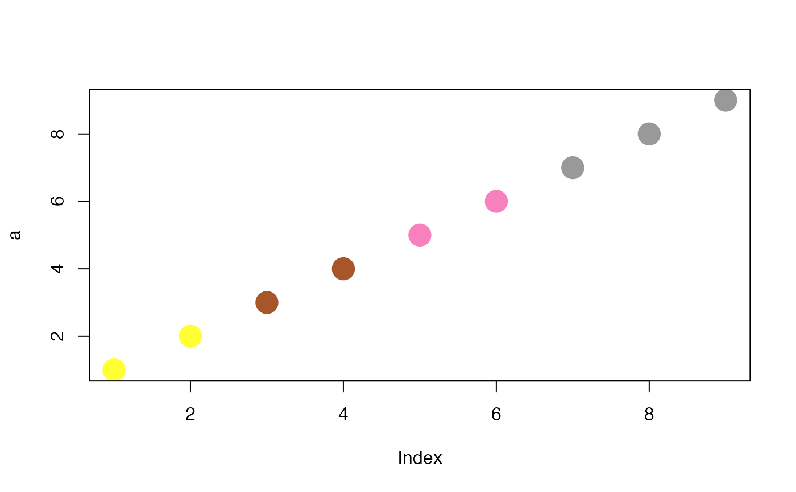

Maps numeric continuous values to values in a color palette
map2color(x, pal, symmetric = TRUE, limits = NULL)A character vector of numeric values (e.g. log2FoldChange values) to be converted to a vector of colors
A vector of characters specifying the definition of colors for the
palette, e.g. obtained via brewer.pal
Logical value, whether to return a palette which is symmetrical
with respect to the minimum and maximum values - "respecting" the zero.
Defaults to TRUE.
A vector containing the limits of the values to be mapped. If
not specified, defaults to the range of values in the x vector.
A vector of colors, each corresponding to an element in the original vector
a <- 1:9
pal <- RColorBrewer::brewer.pal(9, "Set1")
map2color(a, pal)
#> [1] "#FFFF33" "#FFFF33" "#A65628" "#A65628" "#F781BF" "#F781BF" "#999999"
#> [8] "#999999" "#999999"
plot(a, col = map2color(a, pal), pch = 20, cex = 4)

b <- 1:50
pal2 <- grDevices::colorRampPalette(
RColorBrewer::brewer.pal(name = "RdYlBu", 11)
)(50)
plot(b, col = map2color(b, pal2), pch = 20, cex = 3)